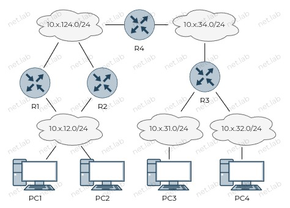
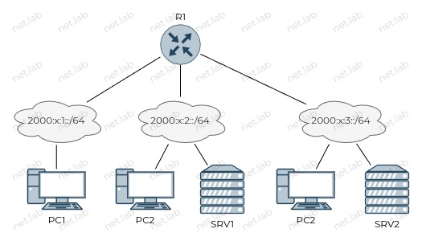

DHCP
Для чего нужен протокол DHCP?
- Dynamic Host Configuration Protocol
- Упрощение настройки большого количества клиентов
- ПК
- МФУ
- IP-телефоны
- IP-камеры
- и т.д.
- В небольших сетях DHCP можно настроить на маршрутизаторе, не выделяя отдельный сервер
- UDP, порты 67, 68
sequenceDiagram
participant Server
participant Client
Note left of Server: Я могу выдавать адреса
Note right of Client: Мне нужен адрес
Какие настройки выдаются устройствам?
- IP-адресс/маска
- Шлюз
- Домен
- Список адресов DNS-серверов
- Списко адресов NTP-серверов
- и т.д. (см. DHCP Options)
Варианты присвоения адреса клиенту DHCP-сервером
- Статическое
- Адрес назначается администратором вручную
- Каждый раз клиент всегда получает один и тот же адрес
- IP-адрес закрепляется за определенным MAC-адресом
- Динамическое
- Адрес выдается на некоторое время
- Каждый раз адрес может меняться
- Автоматическое
- IP-адрес закрепляется за определенным MAC-адресом (не администратором, а самим сервером)
- Выдается навсегда
DORA
Начальная аренда адреса
sequenceDiagram
participant Server
participant Client
Client ->> Server: Discover
Server ->> Client: Offer
Client ->> Server: Request
Server ->> Client: AcknowledgementОбнаружение сервера
- Источник
- MAC - MAC клиента
- IP -
0.0.0.0
- Получатель
- MAC -
FF:FF:FF:FF:FF:FF - IP -
255.255.255.255
- MAC -
sequenceDiagram
participant Server
participant Client
Note left of Server: Ждет запросов...
Note right of Client: Мне нужен адрес
Client ->> Server: DiscoverПредложение от сервера
- Источник
- MAC - Предполагаемый IP клитента
- IP - IP сервера
- Получатель
- MAC - MAC клиента
- IP - MAC сервера
- Сервер отправляет предварительные настройки
sequenceDiagram
participant Server
participant Client
Note left of Server: У меня есть такой адрес
Server ->> Client: Offer
Note right of Client: 🤔 Хм...Запрос (уведомление) клиента
- Подтверждает предложившему серверу, что согласен с настройками
- Сервер помечает IP как занятый
- Отправляется всем в сети, чтобы уведомить все DHCP-серверы, если еще есть такие
sequenceDiagram
participant Server
participant Client
Note right of Client: Я согласен с настройками
Client ->> Server: Request
Note left of Server: Теперь этот адрес занятПодтверждение сервера
- Уведомление клиента о резервировании адреса
- Сервер сообщает время, в течение которого можно использовать адрес
sequenceDiagram
participant Server
participant Client
Note left of Server: Резервирую окончательно адрес
Server ->> Client: AcknowledgementПродление аренды адреса
sequenceDiagram
participant Server
participant Client
Note over Server, Client: DORA
loop Истекло половина времени аренды (lease time)
Client ->> Server: Request
Server ->> Client: Acknowledgement
endЕсли сервер, выдавший адрес, не отвечает:
- Клиент ждет половину оставшегося времени и снова пытается продлить
- Попытки продолжаются до истчения 7/8 времени аренды
- После истечени 7/8 времени аренды отправляется широковещательный запрос, чтобы его могли увидеть все DHCP-серверы
Схема с несколькими DHCP-серверами
sequenceDiagram
participant S1
participant C
participant S2
Note right of C: Мне нужен адрес
Note over S1, S2: Discover (всем)
Note right of S1: У меня есть адрес
S1 ->> C: Offer
Note right of S2: У меня есть адрес
S2 ->> C: Offer
Note right of C: Возьму адрес от S1
Note over S1, S2: Request (всем)
Note right of S1: Резервирую адрес для C
S1 ->> C: Acknowledgement
loop Пока не прошло 7/8 времени аренды
Note over C, S1: Прошло 1/2 оставшегося времени
C ->> S1: Request
Note over C, S1: S1 не отвечает
end
Note right of C: Теперь запрос всем
Note over S1, S2: Нужен адрес (всем)
S2 ->> C: Вот адрес
Note over C, S2: Взаимодействие продолжаетсяДругие сообщения DHCP
NAK
- Отправляет сервер
- Может быть отправлено клиенту, чтобы он перестал использовать адрес
RELEASE
- Отправляет клиент
- Уведомление сервера об освобождении адреса (досрочное окончание аренды)
Уязвимость протокола DHCP
DORAсодержит широковещательную рассылку- Первый откликнувшийся DHCP-сервер получает возможность предложить адрес
- Сервер злоумышленника может дать самый быстрый ответ клиенту
- Возможность дать ложную информацию клиенту
- Например, DNS-сервер
- Возможность легко анализировать незащищенный трафик
- Возможность дать ложную информацию клиенту
Настройка DHCP на Cisco
Выдача клиентам адреса из сети 192.168.0.0/24:
conf t
ip dhcp pool LAN
network 192.168.0.0 255.255.255.0
default-router 192.168.0.1
domain-name net.lab
dns-server 192.168.0.2
end
⚠️ Не все параметры обязательны.
Если нужно исключить некоторые адреса из пула:
conf t
ip dhcp excluded-address 192.168.0.1 192.168.0.2
end
Проверить выданные адреса - show ip dhcp binding.
Получить адрес по DHCP - ip address dhcp.
Когда DHCP-relay не нужен
В данных примерах сервер и клиенты в одной сети, поэтому ретранслятор не нужен.
Пример 1
flowchart LR
R((DHCP server))
C1[Client 1]
C2[Client 2]
S[Switch]
C1 o--o S
C2 o--o S
S o--o RПример 2
flowchart LR
R((DHCP server))
C1[Client 1]
C2[Client 2]
S1[Switch]
S2[Switch]
C3[Client 3]
C4[Client 4]
C1 o--o S1
C2 o--o S1
S1 o--o R
R o--o S2
S2 o--o C3
S2 o--o C4Когда DHCP-relay нужен
А что делать в таких ситуациях?
Пример 1
flowchart LR
R((Router))
DHCP((DHCP server))
C1[Client 1]
C2[Client 2]
S1[Switch]
S2[Switch]
C3[Client 3]
C4[Client 4]
DHCP o--o S1
C1 o--o S1
C2 o--o S1
S1 o--o R
R o--o S2
S2 o--o C3
S2 o--o C4Пример 2
flowchart LR
R((Router))
DHCP((DHCP server))
C1[Client 1]
C2[Client 2]
S1[Switch]
S2[Switch]
C3[Client 3]
C4[Client 4]
DHCP o--o R
C1 o--o S1
C2 o--o S1
S1 o--o R
R o--o S2
S2 o--o C3
S2 o--o C4Пример 3
flowchart LR
R1((DHCP server))
R2((Router))
C1[Client 1]
C2[Client 2]
S1[Switch]
S2[Switch]
C3[Client 3]
C4[Client 4]
C1 o--o S1
C2 o--o S1
S1 o--o R1
R1 o--o R2
R2 o--o S2
S2 o--o C3
S2 o--o C4⚠️ Можно создать в каждой подсети свой DHCP-сервер, но это может быть неэффективно.
- Маршрутизатор не пересылает широковещательные кадры
- Ретранслятор - вспомогательное устройство
- Помогает добраться DHCP-сообщениям от клиента к серверу, и наоборот
Пример настройки DHCP-relay
- Настройки нужно выполнять на ближайшем к клиенту маршрутизаторе.
- Этот маршрутизатор должен иметь доступность с DHCP-сервером.
conf t
int { интерфейс в сторону клиента, где будут запросы }
ip helper-address { адрес DHCP-сервера }
end
DHCPv6
Варианты получения адреса
- С отслеживанием состояния
- Выдача адреса DHCP-сервером
- Без отслеживания состояния
- Получение префикса, длины префикса и адрес шлюза по умолчанию от маршрутизатора IPv6 без помощи DHCP-сервера
- SLAAC (“слэк”)
- Без участия DHCP-сервера
SLAAC
- Stateless Address Autoconfiguration
- Никем не отслеживается использование адреса
- Используется ICMPv6
- Многоадресная рассылка на адрес
FE02::2(все маршрутизаторы) - сообщениеRS - Многоадресная рассылка на адрес
FE02::1(все узлы) - сообщениеRA
- Многоадресная рассылка на адрес
- Процедура EUI-64 или случайно
- В конце проверка на уникальность в сети
"Флаги" управления
RAсообщение содержит специальные флаги- Флаг
М - Флаг
О
- Флаг
- С помощью их комбинаций указывается, каким образом нужно получить адрес
Варианты флагов
М = 0,О = 0- SLAAC - использовать информацию из сообщения RA + EUI-64
М = 0,О = 1- Без отслеживания состояния - адрес от R + EUI-64, остальное от DHCPv6
М = 1- DHCPv6 с отслеживанием состояния - вся информация от DHCPv6
Пример настройки флагов на маршрутизаторе Cisco
Пример установки обоих флагов в 1 (мало смысла в одновременной установке флага в 1).
conf t
int { в сторону клиента }
ipv6 nd managed-config-flag
ipv6 nd other-config-flag
end
Схемы взаимодействия
SLAAC
sequenceDiagram
participant Router
participant Client
participant DHCPv6
Client ->> Router: RS
Note left of Router: Отправлю M = 0, O = 0
Router ->> Client: RA
Note right of Client: Генерирую адрес с помощью EUI-64
Note right of DHCPv6: Никому не понадобился :(Без отслеживания состояния
sequenceDiagram
participant Router
participant Client
participant DHCPv6
Client ->> Router: RS
Note left of Router: Отправлю M = 0, O = 1
Router ->> Client: RA
Note right of Client: Генерирую адрес с помощью EUI-64
Note right of Client: Нужно запросить адрес DNS
Client ->> DHCPv6: Solicit (multicast)
DHCPv6 ->> Client: Advertise (unicast)
Client ->> DHCPv6: Information Request (unicast)
DHCPv6 ->> Client: Reply (unicast)FF02::1:2- адрес многоадресной (multicast) рассылки от клиента всем DHCPv6-серверам- Используется в
Solicitздесь и далее в примерах - От клиента к серверу - 547 порт UDP
- От сервера к клиенту - 546 порт UDP
conf t
ipv6 unicast-routing
int {в сторону клиента}
ipv6 address 2001::1 /64
no ipv6 nd managed-config-flag
ipv6 nd other-config-flag
no sh
end
conf t
ipv6 unicast-routing
ipv6 dhcp pool LAN
dns-server 2001::1
domain-name net.lab
int {в сторону клиента}
ipv6 address 2001::2 /64
ipv6 dhcp server LAN
no sh
end
С отслеживанием состояния
sequenceDiagram
participant Router
participant Client
participant DHCPv6
Client ->> Router: RS
Note left of Router: Отправлю M = 1
Router ->> Client: RA
Note right of Client: Нужно запросить все настройки у DHCPv6
Client ->> DHCPv6: Solicit (multicast)
DHCPv6 ->> Client: Advertise (unicast)
Client ->> DHCPv6: Request (unicast)
DHCPv6 ->> Client: Reply (unicast)conf t
ipv6 unicast-routing
int { в сторону клиента }
ipv6 address 2001::1 /64
ipv6 nd managed-config-flag
no sh
end
conf t
ipv6 unicast-routing
ipv6 dhcp pool LAN
address prefix 2001::/64 [ lifetime ? ]
dns-server 2001::1
domain-name net.lab
int { в сторону клиента }
ipv6 address 2001::2 /64
ipv6 dhcp server LAN
no sh
end
Проверка настроек
show ipv6 dhcp pool
show ipv6 dhcp binding
DHCPv6-relay
Может понадобиться по тем же причинам, что в IPv4.
Пример настройки
conf t
ipv6 dhcp relay destination { адрес DHCP-сервера }
end
🧰 Лабораторная работа
Ознакомиться перед выполнением
- Вместо ❔ или
xнужно подставить свой номер по журналу - Выполнять задание без "отмашки" не стоит ⛔, т.к. задание здесь может отличаться от актуальной версии
- У каждой работы есть срок сдачи 📅, который озвучивается на занятии, после которого работа не может быть защищена на максимальный балл 📉
- Дополнительные задания 📚 не являются обязательными, но по результатам сдачи лабораторной работы может быть выдано одно или несколько из них. Также дополнительное задание может быть сформулировано устно
- Для каждой лабораторной работы должен быть отчет 📝 с описанием выполнения ваших действий, оформление должно соответствовать требованиям (см. на сайте учебного заведения)
- Нужно уметь ответить на вопросы ❓ по теме, контрольные вопросы и другие связанные вопросы
- Примеры могут быть выполнены по желанию, а также выданы в качестве дополнительного задания с изменениями или без в случае неуспешной 😢 защиты основной работы
- Иногда в работах встречаются задания по IPv4 и IPv6 одновременно 🔗. Это считается как одна работа. Допускается сдача работы только с IPv4 или только с IPv6, но максимальный балл в таком случае получить невозможно
🎯 Цель работы: получить навыки настройки DHCP-сервера и DHCP-Relay на маршрутизаторе.
Схемы
⚠️ В качестве PC использовать любое устройство с DHCP-клиентом. Рекомендуется Linux (требуется изучение документации).
⚠️ В качестве SRV рекомендуется использовать маршрутизатор Cisco.
IPv4

IPv6

Условия
IPv4
- В сети
10.x.12.0два маршрутизатора делят один пул пополам. - R4 является DHCP-сервром для сетей
10.x.31.0и10.x.32.0. - Способ маршрутизации любой.
- В случае статической маршрутизации на R4 должно быть 2 маршрута в сеть
10.x.12.0и необходимо настроить IP SLA.
- В случае статической маршрутизации на R4 должно быть 2 маршрута в сеть
- При отключении R1 или R2 доступность сети
10.x.12.0должна остаться.
IPv6
- В сети
2000:x:1::использовать SLACC.- R1 выдает только префикс.
- В сети
2000:x:2::использовать вариант DHCPv6 без отслеживания состояния.- R1 выдает префикс.
- SRV1 выдает любой адрес DNS-сервера.
- В сети
2000:x:3::использовать вариант DHCPv6 с отслеживанием состояния.- R1 ничего не выдает (кроме флагов).
- SRV2 выдает любой адрес DNS-сервера.
- Способ маршрутизации любой.
📚 Дополнительные задания
- Вместо статической маршрутизации использовать OSPF.
- В сети IPv4 настроить VRRP.
- Создать сеть из двух маршрутизаторов (с DHCP-сервером) и ПК. Настроить время аренды адреса 32 секунд. Получить на ПК адрес по DHCP. Отключить сервер, с которого был получен адрес. Проверить, будет ли по истечении 7/8 времени аренды (28 секунд) ПК будет просить адрес у другого сервера.
- Изменение адресации.
🤔 Контрольные вопросы
- Почему
Requestв процессеDORAимеетbroadcastрассылку? - Изучите с помощью Wireshark или аналога заголовок DHCP.
- Какие параметры в нем передаются?
- Какие протокол и порт транспортного уровня используется DHCP?
- Какие номера опций имеют шлюз, срок аренды, маска подсети?
- В случае использования DHCP-relay как DHCP-сервер понимает, из какого пула выдать адрес?
- Варианты присвоения адреса.
- Какой вариант используется чаще всего?
- В каких случаях используется статическое присвоение?
- Кто определяет срок аренды адреса?
- Какой срок аренды используется по умолчанию?
- Зачем нужно исключать адреса из пула?
- Приведите пример, когда DHCP-сервер является еще и DHCP-клиентом.
- Чем отличаются вариант с отслеживанием от варианта без отслеживания?
- Можно ли исключить адреса из DHCPv6 пула?
- Как разделить в одной LAN все возможные адреса между двумя DHCP-серверами?
- Почему в DHCPv6 2 аналога сообщения
Requestиз DHCPv4? - Как задать время аренды адреса?
- Какой смысл разделения одного пула адресов на 2 и более DHCP-сервера?
- Какие номера
optionsимеют шлюз по умолчанию, маска, адрес DNS-сервера?